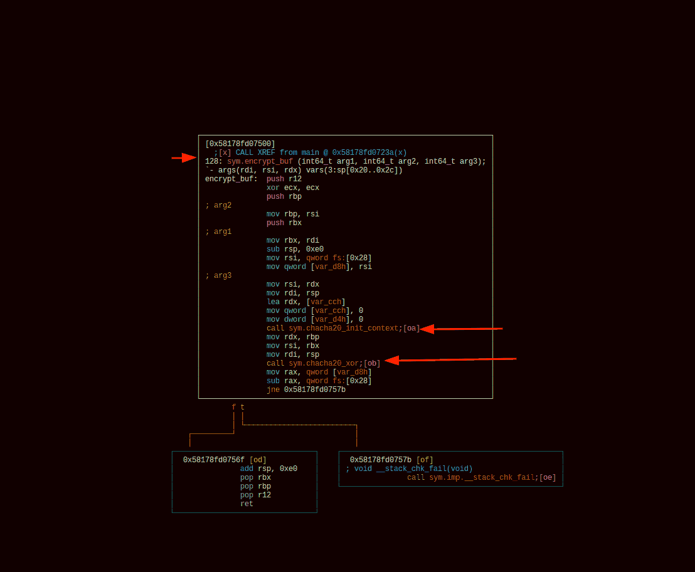

HTB: Crypt Of The Undead
A googling challenge
Table of Contents
Introduction
Some days ago I published my FlagCasino writeup; Now that was a fun reversing challenge, with a little bit of everything an amateur wants: you can execute it, you can disassemble it, you can decompile it, it’s fun. This challenge was solved prior to that, and it is not that I did not like it; I just did not like the ending :P
Static Analysis
After running i (information) within radare2, hexdump on the .undead
flag file, We start with disassembly.
Getting a list of functions with afl.Interesting functions:
encrypt_buf()rename()chacha20...functions1- Lots of I/O functions
0x58178fd07030 1 6 sym.imp.free 0x58178fd07040 1 6 sym.imp.strncpy 0x58178fd07050 1 6 sym.imp.strncmp 0x58178fd07060 1 6 sym.imp.puts 0x58178fd07070 1 6 sym.imp.write 0x58178fd07080 1 6 sym.imp.strlen 0x58178fd07090 1 6 sym.imp.__stack_chk_fail 0x58178fd070a0 1 6 sym.imp.printf 0x58178fd070b0 1 6 sym.imp.__assert_fail 0x58178fd070c0 1 6 sym.imp.close 0x58178fd070d0 1 6 sym.imp.read 0x58178fd070e0 1 6 sym.imp.malloc 0x58178fd070f0 1 6 sym.imp.realloc 0x58178fd07100 1 6 sym.imp.open 0x58178fd07110 1 6 sym.imp.perror 0x58178fd07120 1 6 sym.imp.rename 0x58178fd072f0 1 38 entry0 0x58178fd09fc0 1 32 section..got 0x58178fd07140 4 56 sym.main.cold 0x58178fd07580 1 261 sym.chacha20_init_context 0x58178fd079e0 1 13 sym._fini 0x58178fd07500 3 128 sym.encrypt_buf 0x58178fd07690 15 779 sym.chacha20_xor 0x58178fd07430 9 198 sym.read_file 0x58178fd07190 12 354 main
The main part
Running pds @ sym.main, pdf @ sym.main, and we can see that:
- At the beginning we get 40 bytes in the stack
mov rax, qword fs:[0x28], get thread TID, and it get’s saved to memory2- if the app has no arguments
argc <= 1, quit and show usage - if it has arguments:
- Parse argv (
rsi), so that:rbpcontains the input stringrdicontains the.undeadstring- checks if the input file ends with
.undead: if already encrypted, exit
- Does some strlen/copy/strlen again
0x5c55632601ce - Encrypts with string
BRAAA...INS, then renames the file - If successful in renaming
- Overwrite the file, inform user of zombification
- Parse argv (
So effectively we have to understand part 3 (and maybe part 2 as well):
The encrypt_buf() function
Part three is all about encrypt_buf() function, which can easily be
visualized with VV @ sym.encrypt_buf()

Figure 1: encrypt_buf() graph
- It seems to take 4 arguments:
rdi-> value of r12 in mainrsi-> value of rdi in mainrdx-> “BRAINS” (or its address)r83
- Increases stack size by 224 bytes (
0xe0), creating the following variables:A:rsp+0xcc - 204-> 8 bytesB:rsp+0xd4 - 212-> 4 bytes?C:rsp+0xd8 - 216-> 8 bytes (since max size is 224)
- Uses
rsito loadfs[0x28]-> which is an address: tied to threading. - Variable at
rsiaddr: stored inC- strangely it is not
Citself that gets returned inrax, but the word minus the starting word?
- strangely it is not
Strange parts: Calling these two functions:
sym.chacha20_init_context-> ok this one usesr8sym.chacha20_xor
ChaCha20
I was naive enough to think that the name somehow was an indicator
that the function returned a char char array, with a length of 20.
Pixies. Anyway, I started reviewing the chacha20_xor function in the
same way I looked at encrypt_buf() above, slowly step by step. Then it
struck me that I had somewhere seen that so I just googled chacha20.
One of the first links, explaining this widely used encryption algorithm, was that of Xilinx4stating that:
Its encryption and decryption are same as long as input same initial key, counter and nonce.
Seeing that all the program was doing was to repeatedly encrypt the file’s contents with the same algorithm I did what any normal person would do:
cp flag.txt.undead newflag.txt ./crypt newflag.txt # produced newflag.txt.undead cat newflag.txt.undead # flag in plain text ;)
Summary
If you see any strange function names do not force them to make sense in your mind. Google it. It might prove useful, but in any case, you got nothing to lose.

Figure 2: Cha-cha alright